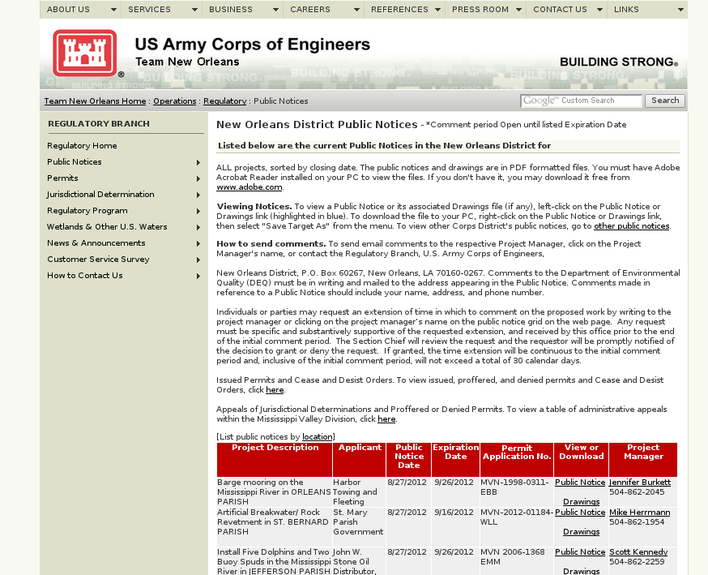
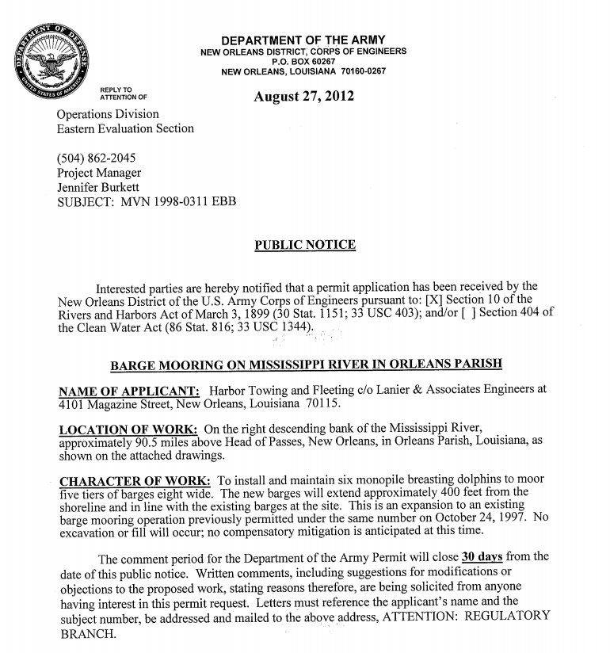
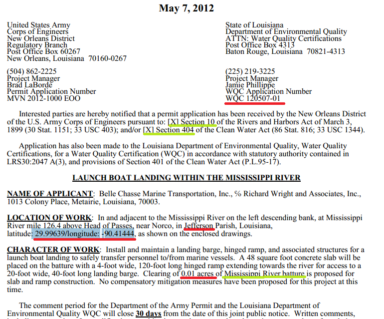

The Gulf Restoration Network on wetlands
The [Gulf Restoration Network] works to protect wetlands from reckless development, destructive logging practices, and harmful U.S. Army Corps of Engineers projects and policies.
More specifically
Applications get posted to a website.
Applications look like this.
How the Gulf Restoration Network uses these
In the past, Scott has had to do this manually. But he doesn't really have time for that.
We're using a computer program to make the first two of these steps easier.
My script extracts this information.
Or not
# United States postal code
/([0-9]{5})-?([0-9]{4})?/
# Phone number
# ISBNs
/([0-9X-]{10,13})/
CSS for HTML, normally.
XPath for more power. For example, select divs that contain tables.
//div[table[@class="bacon"]]XPath for non-HTML
Document databases have nice interfaces. We can mimic this with relational databases.
dt = DumpTruck()
dt.insert({"payload": "10 tons"})
Similar libraries
Removing spaces and make lowercase before searching messy text
# Python
''.join(rawtext.split()).lower()
# Shell
cat raw.txt | tr -d\ | tr '[A-Z]' '[a-z]'
Does the public notice contain the phrase "Section 404"?
# This is Python code
'section404' in rawtext.replace(' ', '').lower()
We have government documents that discuss money. Let's find the juicy ones. (I present a slightly simplified version of this.)
Convert pdfs to text (in shell)
pdftotext file0283.pdfFind amounts of money.
cat file0283.txt | tr -d\ | grep -H $[a-z,.]+Then sort, pick out the highest numbers and make a spreadsheet.
/
#{kind=link}